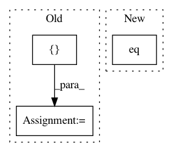

7ea1ff832a842d62b2fdccae7513f7e5216f1921,theanolm/training/basicoptimizer.py,BasicOptimizer,__init__,#BasicOptimizer#Any#Any#Any#Any#,20
Before Change
alpha = tensor.scalar("optimizer/update_weight",
dtype=theano.config.floatX)
alpha.tag.test_value = 0.1
self.model_update_function = theano.function(
[alpha],
[],
updates=self._model_update_exprs(alpha),
name="model_update_function",
profile=profile)
def get_state(self, state):
Pulls parameter values from Theano shared variables.
After Change
weights = tensor.matrix("optimizer/weights",
dtype=theano.config.floatX)
weights.tag.test_value = test_value(size=(100, 16), high=1.0)
word_positions = tensor.eq(self.network.mask, 1).nonzero()
weight = weights[word_positions].sum()
num_words_float = tensor.cast(num_words, theano.config.floatX)
modified_alpha = tensor.switch(tensor.gt(num_words, 0),
In pattern: SUPERPATTERN
Frequency: 3
Non-data size: 3
Instances
Project Name: senarvi/theanolm
Commit Name: 7ea1ff832a842d62b2fdccae7513f7e5216f1921
Time: 2017-10-17
Author: seppo.git@marjaniemi.com
File Name: theanolm/training/basicoptimizer.py
Class Name: BasicOptimizer
Method Name: __init__
Project Name: cornellius-gp/gpytorch
Commit Name: 556baff7e0d8e34d931cdd1a1032a704f71b15ce
Time: 2019-01-27
Author: dme65@cornell.edu
File Name: gpytorch/kernels/rbf_kernel_grad.py
Class Name: RBFKernelGrad
Method Name: forward
Project Name: rusty1s/pytorch_geometric
Commit Name: ab1d74868183e211b8ae7aa155cdcbb5f43843d8
Time: 2020-05-27
Author: matthias.fey@tu-dortmund.de
File Name: examples/cluster_gcn.py
Class Name:
Method Name: test